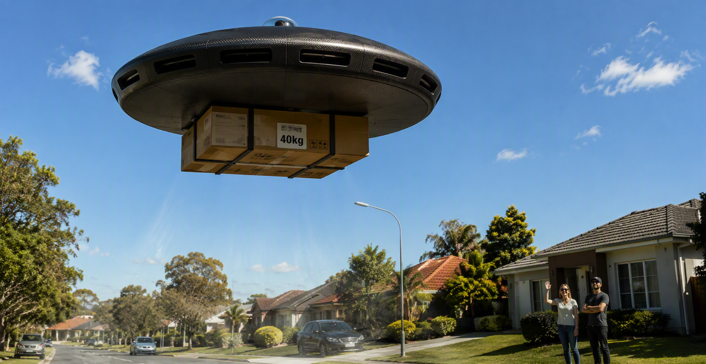
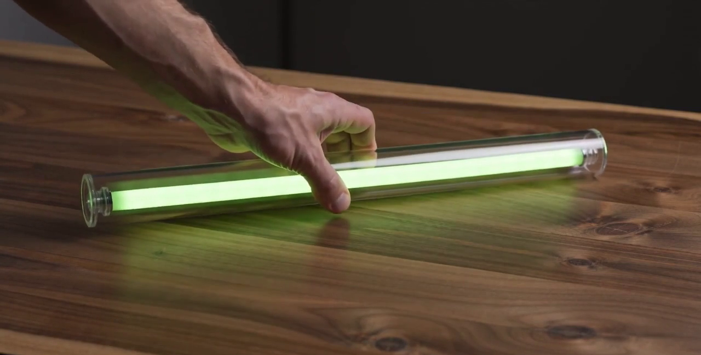
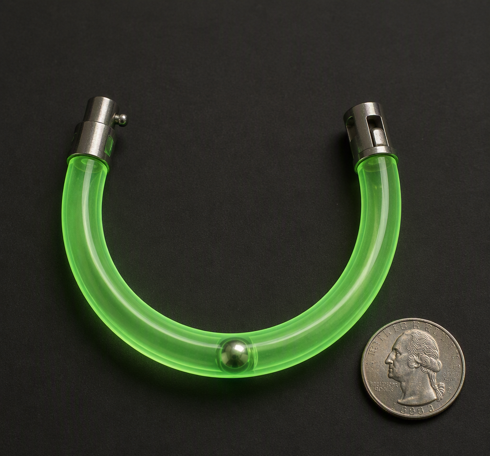
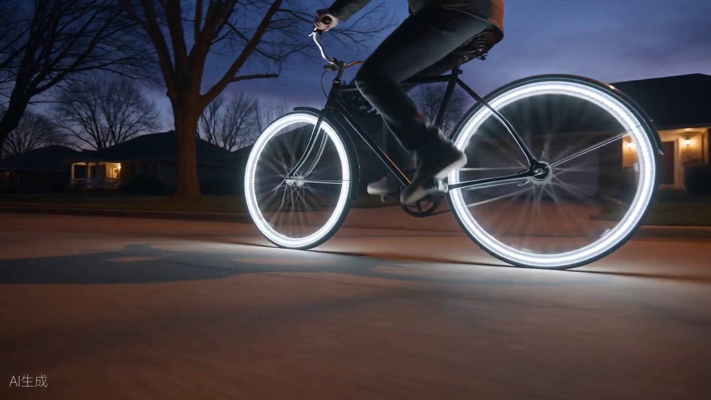
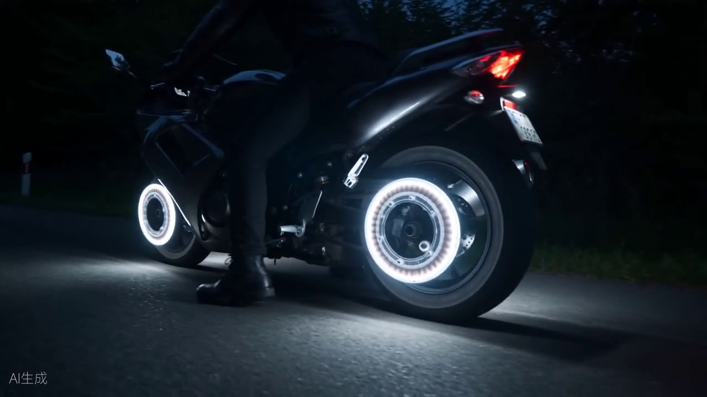

地球产品 — 地球目录
仅限地球使用的产品 — 绿封双子协议地球产品版 — 点击任意标题获取其章节（DOCX，英文原版）
本页访问量: 0
渲染图库 — 各次工作会议批准的帧
点击任意帧查看全尺寸 — 经他裁定确立，2026年8月26日

THE COKE-BOTTLE SAUCER — PHASE 305 — THE 40 KILO PACKAGE, WALK-UP DELIVERY — SEATED 10 SEPTEMBER 2026
THE COKE-BOTTLE SAUCER — PHASE 305 — THE MULE: THE ROOFTOP CEMENT MIXER, THE 200 KG TIER — SEATED 10 SEPTEMBER 2026

THE QUINN FOREVER LIGHT STICK — PHASE 241 — THE PHOSPHOR IS THE BATTERY — SEATED 10 SEPTEMBER 2026

THE QUINN GLOW BRACELET — PHASE 256 — THE BALL LEARNS TO BE WORN — SEATED 10 SEPTEMBER 2026

THE QUINN LUNA LOOPS — PHASE 66B — EARTH-ONLY BY YOUR RULING (EXT OF PHASE 241 FAMILY)

THE QUINN LUNA LOOPS — PHASE 66B — MOTORCYCLE SEAT — NAILED 2 PERFECTLY, SITTING 23 (EXT OF PHASE 241 FAMILY)